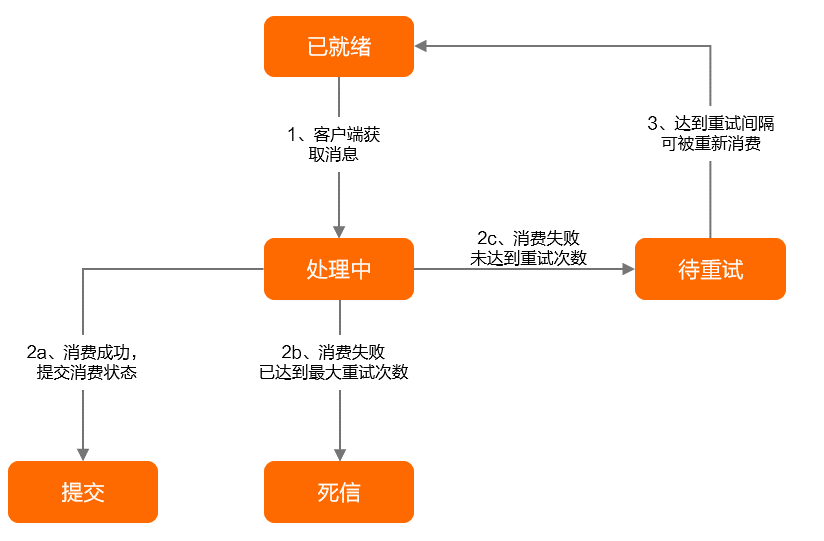

RocketMQ 相关
消息属性
- RocketMQ版中消息（Message）
- 系统保留属性
- Topic，一般相同消息类型的使用同一个Topic
- 消息类型，Normal/FIFO/Delay/Transaction
- 消息ID，由系统生成
- 索引Keys，一般存业务的唯一ID，用作幂等校验
- 标签Tag，只能设置一个，消费者可以拉取指定Tag的消息
- 定时时间
- 消费重试次数，每次重试会自增
- 业务自定义属性，键值对
- 消息负载，消息的body
消息重试
- 消费重试
- 消费重试策略有两种，它们的最大重试次数都是消费者分组创建时的元数据控制：
- PushConsumer，重试间隔是预定义的坡度表
- SimpleConsumer，消费者消费时指定InvisibleDuration，超时未ack成功则重试
- 死信队列的消息默认不能被消费者消费，但可以在控制台重新发送它，给消费者消费
